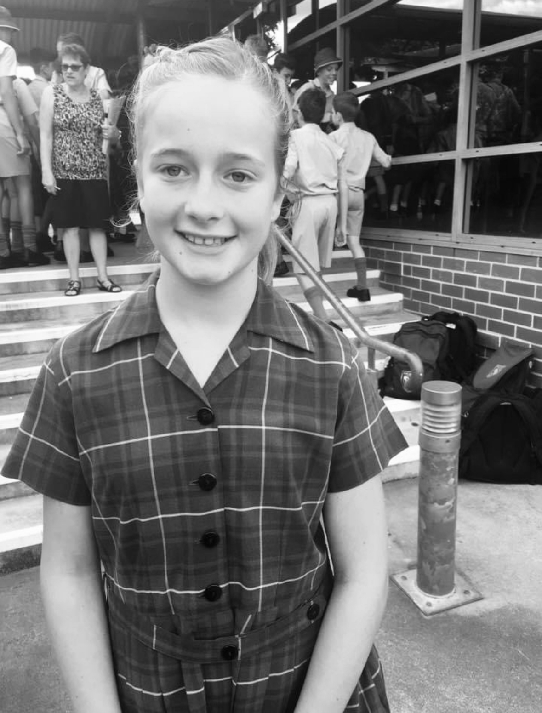

Teaching Philosophy
Why I Became A Teacher
Education and teaching has always been a major part of my life as I attended school, and my mother and sister are both teachers.
In attending this course, I desire to be a design and tech teacher in which I can help others, watch
and aid them to grow into their full potential. Nel Noddings, an author, describes the main aim of
education for individuals to acquire true happiness. I want to aid in the common good that education
provides to promote human dignity and flourishing.

I attended a public primary school from K to 6 and
graduated high school at a private school in 2021. I am also attending Uni and plan to complete my course
after four years. My passion and desire to teach was mainly due to the influential impact of my high school
teachers, specifically My year 12 English, Design and tech and PDHPE teachers. I was never an exceptionally bright student,
but in the later schooling years, my teachers strived to provide support that resulted in my grades becoming better and my love for
attending school.
They all exhibited genuine care for all their students and were passionate about what they taught,
but also wanted to see us succeed not only in academic achievements but also in achieving our full potential and developing our character.
This generosity provided a passion for me to pay back and do the same to others. I want to have a beneficial impact on kids' lives and encourage development.
So What Is My Teaching Philosophy?
All students deserve the right and opportunity to learn. Therefore, my teaching philosophy is centered around the equitable experience that all students should get through their schooling. This involves both academic attainment and life skills or building of character.
Student learning
All students have a right to learn, no matter their backround or past experinces. All students must get an equal opportunity to partipate in learning and co-curccilar activites wihtin the school. This will build their confidence and social skills. I will strive to set high standards for all my studnets, chellnging them to try their hardest and build lessons upon inquiry based learning. I will strive to create relevant lesson plans in which studnets feel the relevance and importance of their learning and application to real world experinces.
Student development
Not only should students be develeoping in their academic ability, but also in themselves as people. This includes their character, interests and what defines them, which may be sepate from their home. Many students struggle in their households to have the freedom of creativity or oppunrity to explore new interests or hobbies. Therefore, creating a comfortable, safe envrionment in which students can floruish is crucial to my approach to teaching. Assignments and classwork must be designed to spark interest, deveope skills beyond academics both personal skills and social, or communal.